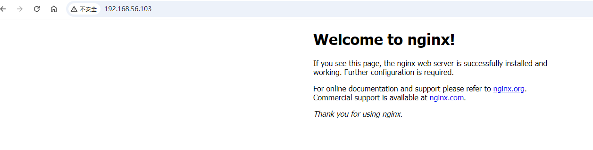
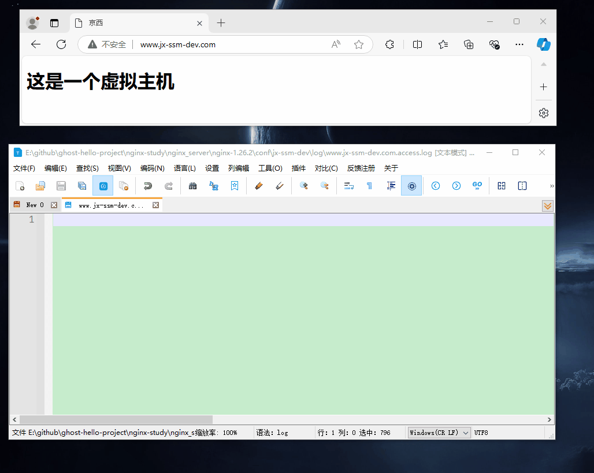

总览
部分参考了 nginx
主要环境为 win10, 同时尽量在 centos 7.4 系统上进行测试
尚硅谷课程目录
01_Nginx从入门到精通_教程简介 03:32
02-安装部署-VMware中安装CentOS7.4 06:35
03-安装部署-让虚拟机可以联网 03:33
04-安装部署-使用XShell给虚拟机配置静态ip 05:29
05-安装部署-虚拟机不能上网简单排错 09:16
06-安装部署-Nginx四个发行版本简单介绍 05:28
07-安装部署-Nginx在CentOS7中编译安装成系统服务 18:06
08-基本使用-Nginx的目录结构 在线编辑默认页 08:25
09-基本使用-Nginx多进程模型和基本请求流程 04:16
10-基本使用-Nginx.conf 最小配置解析 22:44
11-基本使用-虚拟主机实战介绍 01:15
12-基本使用-浏览器、Nginx与http协议 04:08
13-基本使用-虚拟主机原理 02:57
14-基本使用-使用host文件解析域名 05:50
15-基本使用-公网域名配置与泛域名解析实战 09:10
16-基本使用-Nginx虚拟主机域名配置 08:39
17-基本使用-servername的多种匹配方式 10:00
18-基本使用-基于域名的几种互联网企业需求解析 09:29
19-基本使用-反向代理与负载均衡实战介绍 01:32
20-基本使用-Nginx隧道式模型 网关、代理与反向代理 12:51
21-基本使用-Nginx反向代理在企业中的应用场景 07:59
22-基本使用-什么是负载均衡 04:52
23-基本使用-反向代理到外网与内网主机的配置 12:12
24-基本使用-负载均衡基本配置 03:25
25-基本使用-负载均策略之权重、down、backup 09:14
26-基本使用-负载均策略之ip_hash、fair、leastconn与无状态回话解决方案 18:28
27-基本使用-动静分离的原理与使用场景 05:40
28-基本使用-动静分离配置 09:22
29-基本使用-使用正则配置动静分离 07:25
30-基本使用-URLRewrite 伪静态配置 10:40
31-基本使用-网关的概念、伪静态同时负载均衡 14:29
32-基本使用-防盗链与http的referer 05:02
33-基本使用-防盗链基本配置与none 09:19
34-基本使用-使用curl测试防盗链 03:53
35-基本使用-企业实战-盗链资源返回页面或提示图片 06:50
36-基本使用-高可用场景及解决方案 11:37
37-基本使用-最快速度搞定keepalived 16:03
38-基本使用-不安全的Http协议 16:18
39-基本使用-非对称加密算法原理 04:12
40-基本使用-同样不安全的非对称加密算法 06:48
41-基本使用-ca机构参与保证互联网安全 17:10
42-基本使用-自签名介绍 02:17
43-线上实战-购买域名流程 04:47
44-线上实战-购买vps流程 05:13
45-线上实战-在控制台修改vps密码 01:42
46-线上实战-安装LNMP环境防火墙配置 05:35
47-线上实战-修改Nginx默认页 03:51
48-线上实战-解析域名到主机 03:26
49-线上实战-在线申请证书 03:59
50-线上实战-把刚申请的证书配置到Nginx上 06:06
51-线上实战-安装Discuz与协议自动跳转 10:38
052-Nginx高级篇介绍 09:30
053-通过扩容提升整体吞吐量 10:13
054-服务器硬件扩容及存储选型 09:35
055-集群中使用Nginx保持会话的特点 07:04
056-iphash维持会话特点及配置 11:09
057-在nginx中通过URI维持会话 09:40
058-在nginx中使用java的cookie负载均衡 10:32
059-使用第三方模块平滑升级 19:00
060-sticky上游静态服务器会话保持 11:24
061-观察baidu的keepalive 03:27
062-什么时候使用keepalive 02:16
063-在nginx 中关闭keepalive 06:06
064-使用charles工具抓包连接状态 10:49
065-nginx对客户端keepalive配置详解 21:13
066-nginx对上游服务器使用keepalive配置详解 09:32
067-Nginx反向代理开关keepalive性能压测对比 18:22
068-Tomcat直连与反向代理性能压测对比 16:18
069-http报文结构 05:10
070-反向代理内存与文件缓冲区核心流程 19:30
071-Nginx对客户端的缓冲和限制 15:35
072-使用反向代理后无法获取客户端ip地址 10:23
073-使用X-Forwarded-For获取真实ip以及思考 10:15
074-一些默认有用的header 07:25
075-有哪些网站使用了gzip压缩 05:56
076-Gzip动态压缩及缺点 19:53
077-gzip_static_module与http_gunzip_module 05:01
078-gzip_static_module配置说明 02:59
079-gunzip_module配置使用 13:38
080-Brotli比gzip更好的压缩格式模块化安装 13:33
081-Brotli配置 08:44
082-淘宝网案例 进一步压缩客户端的请求数 09:05
083-Tengine concat模块安装在开源版本Nginx上 08:00
084-模拟淘宝网合并请求效果 12:10
085-高并发系统资源静态化方案 23:25
086-Nginx SSI 服务器端文件合并 06:17
087-Nginx SSI服务器端配置选项 07:20
088-Nginx SSI模板命令 09:21
089-资源静态同步方案介绍 06:00
090-使用rsync手动同步源文件 07:49
091-增加安全认证及免密登录 07:35
092-近时推送方案 06:27
093-实时推送源服务器配置 06:31
094-rsync的readonly 03:51
095-使用inotify监控目录文件变化 05:15
096-rsync inotify 自动化脚本 07:06
097-什么是多级缓存 20:34
098-京东web端浏览器缓存使用情况 09:13
099-浏览器的强制缓存与协商缓存 14:53
100-Nginx etag lasmodify配置 07:53
101-配合使用etag lasmodify cache-control expires 15:00
102-浏览器缓存额外需要注意的事项和应用场景 16:02
103-cdn实现原理及场景 13:31
104-在云服务器安装GEOIP依赖 13:16
105-Nginx下GEOIP模块安装 05:02
106-线上获取用户归属地实例配置与智能dns对比 10:45
107-使用Nginx作为跳板机正向代理服务器配置 12:23
108-反向代理缓存proxy_cache配置 21:05
109-缓存清理插件编译安装 06:18
110-cache_key 与缓存清理 19:33
111-nginx的断点续传 07:56
112-proxy_cache配置详解 21:07
113-nginx内存缓存介绍 04:00
114-nginx外置缓存介绍 04:51
115-应用缓存与多级缓存整体结构 10:08
116-使用strace追踪内核对sendfile缓存调优 20:02
117-errorpage使用 08:00
118-匿名location和return 06:53
119-Nginx+Memcached完整解决方案 17:45
120-开源版Nginx中使用redis2-nginx-module连接redis 20:32
121-使用Stream模块为mysql集群透明代理 15:31
122-QPS限制模块及使用jemeter压测 16:44
123-QPS限制中漏桶算法实现及压测 16:58
124-limit_req burst与漏桶算法中bucket概念对比 04:35
125-什么是令牌桶算法 06:20
126-传输带宽限制 07:15
127-客户端并发数限制 07:36
128-互联网公司日志的使用场景 12:31
129-日志内存缓冲区 09:57
130-日志压缩解压缩与json格式输出 15:26
131-error日志与日志分割 04:07
132-upstream被动式重试机制 09:08
133-主动健康检查使用tengine模块 17:16
134-Lua luajit nginx openresty关系及开发工具介绍 11:47
135-lua基础语法 24:46
136-Openresty安装及测试lua代码 12:57
137-获取系统变量及参数 07:51
138-lua自定义函数、lrucache、shared_dict 21:28
139-Openresty连接redis 10:13
140-Openresty连接mysql 07:48
141-在Openresty中使用模板引擎 16:29
142-redis+mysql+模板引擎示例 11:29
资料汇总
书籍推荐
参考这个知乎问答: 推荐学习 Nginx 的书？
有如下几本图书


视频教程
博客
安装
centos 和 docker 安装
可参考: centos 笔记
nginx 的四个版本
Nginx开源版（官方免费开源版本）
http://nginx.org/
Nginx plus 商业版（付费版，在上版本基础上加了一些功能）
https://www.nginx.com
openresty（nginx+lua完美整合）
http://openresty.org/cn/
Tengine（淘宝网公布发行版本，免费开源）
http://tengine.taobao.org
linux
docker 安装
步骤
创建目录
[root@localhost docker]# tree
.
├── conf
├── html
└── log
3 directories, 0 files
[root@localhost docker]#
启动一个临时 nginx 容器
docker run --name nginx -p 10002:80 -d nginx
复制配置文件
docker cp nginx:/etc/nginx/nginx.conf ~/program/docker/nginx/conf/nginx.conf
docker cp nginx:/etc/nginx/conf.d ~/program/docker/nginx/conf/conf.d
docker cp nginx:/usr/share/nginx/html ~/program/docker/nginx/
[root@localhost nginx]# tree
.
├── conf
│ ├── conf.d
│ │ └── default.conf
│ └── nginx.conf
├── html
│ ├── 50x.html
│ └── index.html
└── log
4 directories, 4 files
[root@localhost nginx]#
删除此临时 nginx 容器
docker stop nginx
docker rm nginx
重新创建 nginx 容器
docker run \
-p 80:80 \
--name nginx \
-v /root/program/docker/nginx/conf/nginx.conf:/etc/nginx/nginx.conf \
-v /root/program/docker/nginx/conf/conf.d:/etc/nginx/conf.d \
-v /root/program/docker/nginx/log:/var/log/nginx \
-v /root/program/docker/nginx/html:/usr/share/nginx/html \
-d nginx:1.26.2
在宿主机访问

参考
宝塔 Linux 安装
- 待完成
源码安装
- 待完成
windows 安装
- 待完成
基本使用
最小化配置
#允许进程数量，建议设置为cpu核心数或者auto自动检测，注意Windows服务器上虽然可以启动多个processes，但是实际只会用其中一个
worker_processes 1;
events {
# 单个进程最大连接数（最大连接数=连接数*进程数）
# 根据硬件调整，和前面工作进程配合起来用，尽量大，但是别把cpu跑到100%就行。
worker_connections 1024;
}
http {
# 文件扩展名与文件类型映射表(是conf目录下的一个文件)
include mime.types;
# 默认文件类型，如果mime.types预先定义的类型没匹配上，默认使用二进制流的方式传输
default_type application/octet-stream;
# sendfile指令指定nginx是否调用sendfile 函数（zero copy 方式）来输出文件，对于普通应用，必须设为on。
# 如果用来进行下载等应用磁盘IO重负载应用，可设置为off，以平衡磁盘与网络IO处理速度。
sendfile on;
# 长连接超时时间，单位是秒
keepalive_timeout 65;
# 虚拟主机的配置
server {
# 监听端口
listen 80;
# 域名，可以有多个，用空格隔开
server_name localhost;
# 配置根目录以及默认页面
location / {
root html;
index index.html index.htm;
}
# 出错页面配置
error_page 500 502 503 504 /50x.html;
# /50x.html文件所在位置
location = /50x.html {
root html;
}
}
}
基本的虚拟主机配置
hosts
127.0.0.1 www.jx-ssm-dev.com
主配置文件
#允许进程数量，建议设置为cpu核心数或者auto自动检测，注意Windows服务器上虽然可以启动多个processes，但是实际只会用其中一个
worker_processes 1;
events {
# 单个进程最大连接数（最大连接数=连接数*进程数）
# 根据硬件调整，和前面工作进程配合起来用，尽量大，但是别把cpu跑到100%就行。
worker_connections 1024;
}
http {
# 文件扩展名与文件类型映射表(是conf目录下的一个文件)
include mime.types;
# 默认文件类型，如果mime.types预先定义的类型没匹配上，默认使用二进制流的方式传输
default_type application/octet-stream;
# sendfile指令指定nginx是否调用sendfile 函数（zero copy 方式）来输出文件，对于普通应用，必须设为on。
# 如果用来进行下载等应用磁盘IO重负载应用，可设置为off，以平衡磁盘与网络IO处理速度。
sendfile on;
# 长连接超时时间，单位是秒
keepalive_timeout 65;
# 虚拟主机的配置
server {
# 监听端口
listen 80;
# 域名，可以有多个，用空格隔开
server_name localhost;
# 配置根目录以及默认页面
location / {
root html;
index index.html index.htm;
}
# 出错页面配置
error_page 500 502 503 504 /50x.html;
# /50x.html文件所在位置
location = /50x.html {
root html;
}
}
# 引用其他配置文件, 可以是相对路径或绝对路径
include jx-ssm-dev/*.conf;
}
子配置文件
server {
listen 80;
server_name www.jx-ssm-dev.com jx-ssm-dev.com;
# 访问日志
# combined 意为使用默认的日志格式
access_log E:/projectpath/jx-ssm-dev/log/www.jx-ssm-dev.com.access.log combined;
location / {
root E:/projectpath/jx-ssm-dev/html;
index index.html index.htm;
}
# 出错页面配置
error_page 500 502 503 504 /50x.html;
# /50x.html文件所在位置
location = /50x.html {
root E:/projectpath/jx-ssm-dev/html;
}
}
效果

反向代理
反向代理 spring boot
最简单的配置
#允许进程数量，建议设置为cpu核心数或者auto自动检测，注意Windows服务器上虽然可以启动多个processes，但是实际只会用其中一个
worker_processes 1;
events {
#单个进程最大连接数（最大连接数=连接数*进程数）
#根据硬件调整，和前面工作进程配合起来用，尽量大，但是别把cpu跑到100%就行。
worker_connections 1024;
}
http {
#文件扩展名与文件类型映射表(是conf目录下的一个文件)
include mime.types;
#默认文件类型，如果mime.types预先定义的类型没匹配上，默认使用二进制流的方式传输
default_type application/octet-stream;
# sendfile指令指定nginx是否调用sendfile 函数（zero copy 方式）来输出文件
# 对于普通应用，必须设为on。如果用来进行下载等应用磁盘IO重负载应用，可设置为off，
# 以平衡磁盘与网络IO处理速度。
sendfile on;
#长连接超时时间，单位是秒
keepalive_timeout 65;
# spring boot 后端
server {
listen 80;
server_name api.thresh-dev.com;
location / {
proxy_pass http://localhost:8092;
proxy_set_header Host $host;
proxy_set_header X-Real-IP $remote_addr;
proxy_set_header X-Forwarded-For $proxy_add_x_forwarded_for;
}
}
}
关于 docker 反向代理 spring boot 的几个问题
- 本地开发环境如何反向代理
proxy_pass http://host.docker.internal:8092;
- 非本地环境如何反向代理
在同一个网络
proxy_pass 服务名;
不在同一个网略
proxy_pass http://ip:端口;